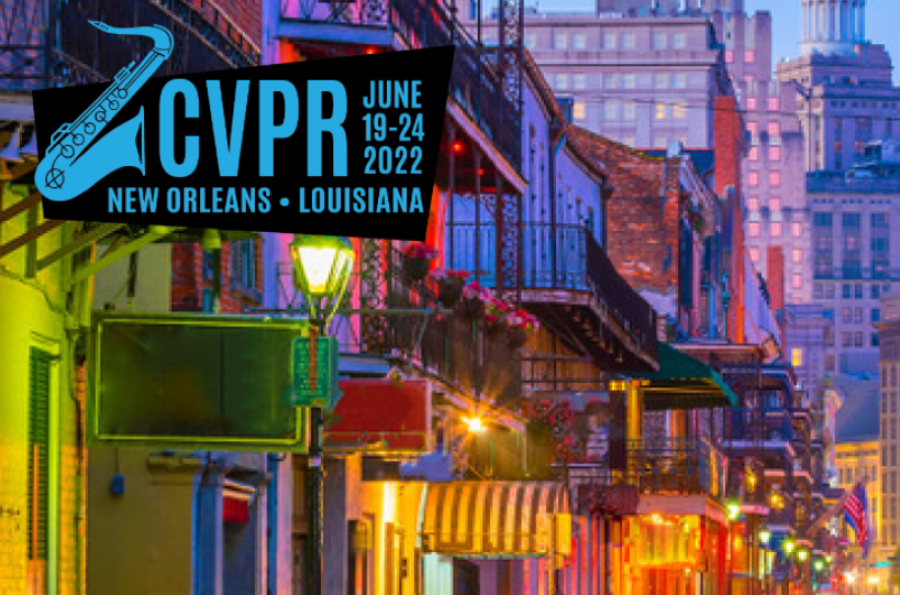

The work of researchers from the Imageomics Institute were featured during the IEEE 2022 Conference on Computer Vision and Pattern Recognition (CVPR) held between June 19 - 24. Recent results from Imageomics projects were shared through three juried conference proceedings that are available via open access through IEEE Xplore. Publications include: One Step at a Time: Long-Horizon Vision-and-Language Navigation With Milestones, Learning to Detect Mobile Objects from LiDAR Scans Without Labels, and Learning with Free Object Segments for Long-Tailed Instance Segmentation.
Additionally, four posters were presented during the conference and Institute Director, Tanya Berger-Wolf, provided a keynote address during the CVPR conference EarthVision workshop on June 19, 2022.